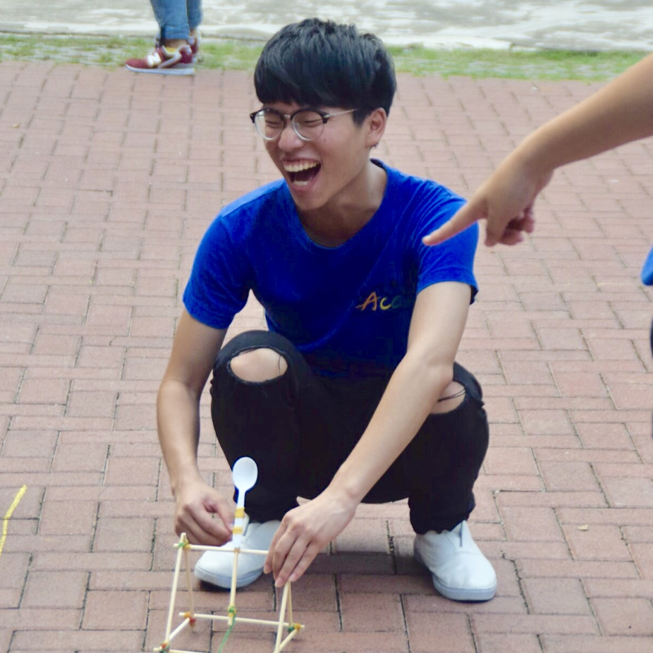

公司職員簡介
姓名 : 舒啟紘
職稱 : 2017原文冬令營生活股長、2018原文冬令營營長 2017-2018清華大學原住民文化社社長、2017原創週總籌、美食股長
入社年份 : 2015-2017
特殊表現 : 沒有人敢填
員工表現

林勳諺
舒啟紘你是我原文的第一個股長，所以我最愛你，雖然你不苟言笑但我還是愛你
張瑋
你是一個很有原則的怪人，既好玩又恐怖，而且具備很多吸引我傚法的優點。感謝你認真扮演社長與冬令營長的角色，讓社團如實朝好的方面邁進。期待你以後參選總統帶我們放眼國際窺視未來扭轉乾坤征服宇宙，愛你
鈁淩
冬令營才真的與你共事吧，覺得你是個溫暖的人，常常會替別人想很多，做事也很細心，能在冬令跟你共事是我的榮幸XD，聽說你之後要去德國念書，祝你一切順利然後畢業快樂!
硬魚
其實一開始覺得你很兇到最近才發現原來是長相的問題哈哈哈，真心覺得你是很厲害很有野心的一個人，找飯友的功力也一流，祝你求學順利拉你一定會是個大人物的！
可綠
對你的第一印象就是你超尷尬的,後來當你的股員的時候,雖然會被你的緊張搞得也很緊張,但你真的是一個很負責任的人! 聊過天後知道你是一個很有抱負的人,為自己設立目標然後努力達成真的很厲害,最後還是要感謝你罩我這個廢物R,祝你學業順利留學順利健身順利找飯友順利!
依潔
一開始覺得你很嚴肅，後來發現你只是想把每件事都做到最好很要求自己，覺得你是一個很厲害的人在課業與社團之間真的達到一個很好的平衡，畢業快樂！
宥儒
原本以為你是個嚴肅的人，後來猜發現你只是在對的時間做對的事，能感受到一直以來你對原文的熱愛和重視，並努力的付出，辛苦了，畢業快樂!
妤
哈囉啟紘，認識你之前一直覺得你很嚴肅都板著一張臉，後來才發現你很可愛（沒有很只是加了感覺比較順）。你很有想法也很會幫人分析，然後也很傲嬌，跟你變熟的原因可能是因為醫科哈哈我忘了。祝尼延畢快樂當兵快樂申請研究所也順利唷
展
我們好像沒有一起真正共事過，不過我覺得你是一個很認真的人，希望你能在國外變得很厲害，然後開車小心不要再出車禍了。
源芳
一進原文的假日營你是個嚴肅又神秘又聲音蠻好聽的總值，當了你的股員後才發現你是個很厲害又很玻璃心有時候又像個小孩笑起來還很靦腆的很酷的人，然後看你演戲真的好好玩哈哈哈，也謝謝有你這個這麼負責任又有條理的生活股長讓我們股員做起事來很輕鬆很快樂，真心覺得你是個很棒的人!畢業快樂拉~~
斈恩
舒啟鴻！因為被選上社長才和你變比較熟，總之謝謝一切，無論是教導與包容。一直覺得你是很厲害又很認真的人，任何事任何挑戰，你一定都沒問題的！衷心希望未來你能一切順利，畢業快樂！